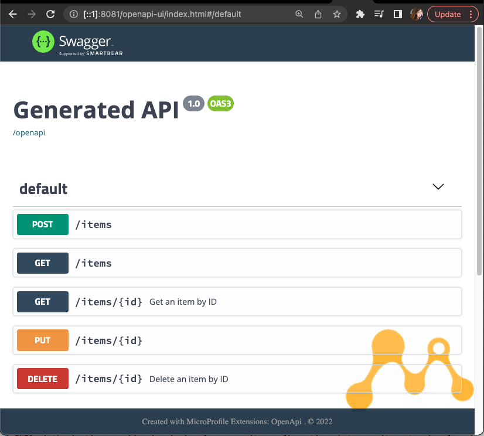
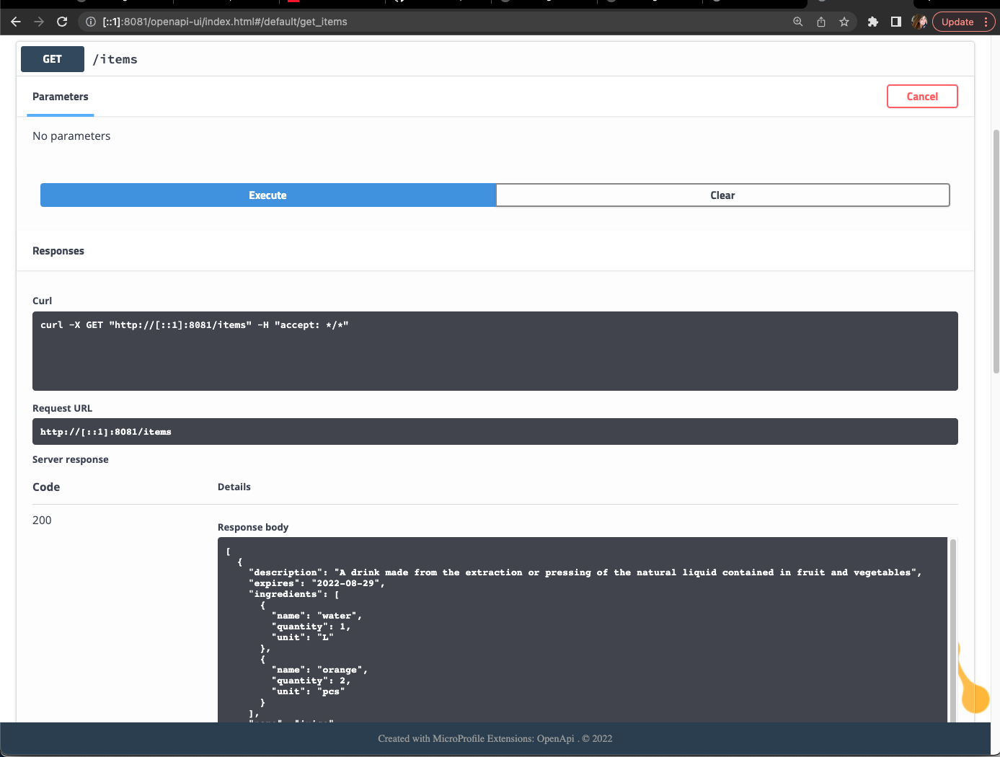
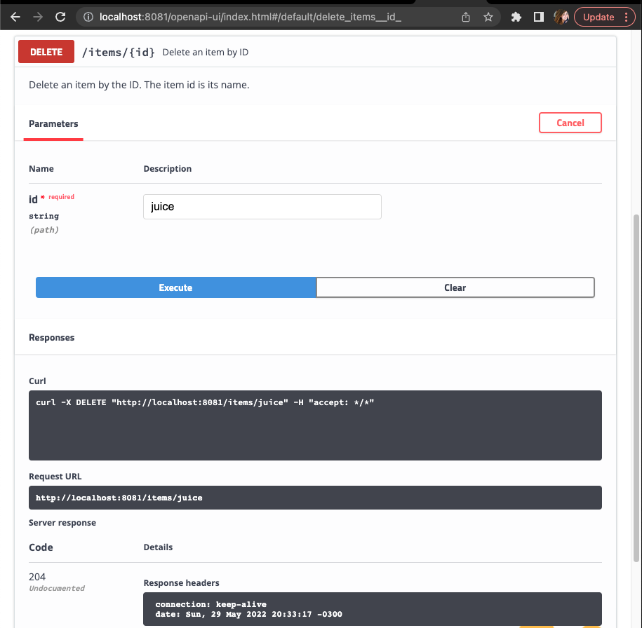

4. Creating a client service with MicroProfile RestClient
4.1 Introduction
4.1.1 What you will learn
Here are the main goals you will achieve with this hands-on execise:
- Learn the configuration required in a Helidon service to allow it to consume an external endpoints.
- With JAX-RS service, execute five different operations through an external service:
- List all
- Find by ID
- Insert
- Update
- Delete
4.1.2 Use Case
For this scenario, you will use an existing JAX-RS service, the restaurant service. You will create a client application that can consume all the RESTful APIs available in the restaurant service.
You will start with an existing service with a foundation that will support the development of your client application. Your task is to finish the service, as all the RestClient configuration and implementation is missing.Make sure your service can properly interact with the restaurant service.
4.2 Pre requisites
To be able to go through this guided exercise, you will need to have the following components in your dev environment:
- Have finished the steps described in Preparing your environment
4.3 Hands-on practice
For this scenario, you should create a client service that consumes an existing JAX-RS service: the restaurant service .
You will enhance a partially written restaurant client service to allow it to integrate with the following restaurant service APIs:
| Method | Path | Description |
|---|---|---|
GET |
/restaurants | Fetch all the items |
GET |
/restaurants/{id} | Fetch an item by ID |
POST |
/restaurants | Insert new items |
PUT |
/restaurants/{id} | Update items |
DELETE |
/restaurants/{id} | Delete items |
The client service is partially written and you are the one responsible for creating all the RestClient configuration and implementation that are missing. Your task is to finish this application and make sure you can interact with the restaurant service.
4.3.1 Understanding the services
4.3.1.1 The restaurant service
The restaurant service provides RESTful APIs that allow managing the items that are currently needed by the restaurant. An item has the following structure:
{
"name": "water",
"description": "Water appears as a clear, nontoxic liquid composed of hydrogen and oxygen, essential for life.",
"type": "BEVERAGE",
"expires": "2025-12-03",
"ingredients": [{"name": "water", "unit": "L", "quantity": 2}]
}
Since our application needs to integrate with this service, after the implementation is finished, a practical test will require both services to be up running in our environment.
In the restaurant service, check the class RestaurantController. These are the endpoints your client service should consume.
Next, let's check the existing code for the client service and start coding.
4.3.1.2 The restaurant client service
-
Locate and open with your IDE of choice the project
helidon-microstream-training-labs-foundation/restaurant-client-lab. -
Open the
pom.xmland check your project has the following dependency:This is the MP OpenAPI-UI extension. It will allow you to use your browser to interact with the REST APIs you are about to create. Once you are finished, you will see something like this:<dependency> <groupId>org.microprofile-ext.openapi-ext</groupId> <artifactId>openapi-ui</artifactId> <version>1.1.5</version> </dependency>
Let's get started with the integration of our restaurant client service and the restaurant service using MicroProfile RESTClient.
4.3.2 Integrating through MicroProfile RESTClient
In order to consume a service using RESTClient, we will:
- Create an
interfacethat will match the service operations we want to be able to invoke; - Set up the appropriate annotations to configure this
interfaceas a rest client; - Add to the
application propertiesa reference to the external service that will be consumed by the rest client;
4.3.2.1 Creating the RESTClient interface
- Open the
restaurant-client-labin your IDE. -
Locate and open the
RestaurantServiceinterface.This is the interface we'll use as a RestClient to consume the external API exposed by Restaurant Controller part of the
restaurant-service. -
Configure this
interfaceas a RESTClient by adding, before the interface's name, the annotations@Path("restaurants")and@RegisterRestClient. It will look like this: -
The next step is to create the contract of the methods you will consume on the external service.
As a first example, let's check the insert operation. The
RestaurantController(part of therestaurant-service), has the following method:In order to invoke the endpoint exposed by this method, create the following method declaration in your@POST public Response insert(@Valid Item item) { return Response.status(Response.Status.CREATED) .entity(repository.save(item)) .build(); }RestaurantServiceInterface:Awesome!
You've just created the first integration between your client and the external service! It's as easy as that!
-
Now, implement the other four method declarations in the
RestaurantServiceinterface.Make sure you have all five methods of the external service:
findById,insert,update,deleteandgetAll.
4.3.2.2 Configuring the RestaurantService endpoint
The next step is to create a MicroProfile configuration property, where the property's name is the RESTClient interface FQDN, and the value is the external service URL.
- Add the following property in
resources/META-INF/microprofile-config.properties:
Good job
The client configuration is now done. You've learned that when using RESTClient, the integration is done with really few code. The contract goes within the interface and all configuration within the microprofile-config.properties file.
4.3.3 Testing the service
To test this service you need to run two applications, the restaurant-service and the restaurant-client-service. Each service will run in a different port.
4.3.3.1 Starting the restaurant service
To start the restaurant service locally, follow these steps:
- Open the terminal;
- Access the foundation project directory, e.g.:
- Package and run the service:
-
Use your browser to confirm the service is up and running at:
- Restaurant service: http://localhost:8080/
About the restaurant service persistence
For this lab's learning purpose a database persistence is not required. The service uses an in-memory list to store and retrieve data.
To simplify the lab it is also initialized with two items in the list : "Water" and "Juice".
Now, let's package and run our client.
4.3.3.2 Starting the restaurant client service
- On a different terminal tab, access the service directory. e.g.
-
Package and run the service:
-
Use your browser to confirm the service is up and running at
- Restaurant client service: http://localhost:8081/
4.3.3.3 Testing the restaurant client service
-
Your client includes the microprofile extension ui for OpenAPI. To access the ui, open:
- Client OpenAPI UI: http://localhost:8081/openapi-ui.
-
Select the GET /items endpoint, click on "try it out" button, and then on the "Execute" blue button.
You should get an
HTTP 200response and a list with two items.
-
Now, use your client service API to delete the "juice" item. In your browser, locate the DELETE items endpoint and click on "Try it out".
-
Type
juicein theIdfield and click on the Execute button.
 -
Finally, confirm that the item was deleted and is not retrieved with the GET items endpoint endpoint. The response should be an
HTTP 200andjuiceshould not be in the list.
Feel free to use the OpenAPI UI, postman or cURL to test all your service's endpoints.
Congratulations
Congratulations, you've implemented a client service application with Helidon and Microprofile that can consume an external JAX-RS service by using the new RESTClient MicroProfile!